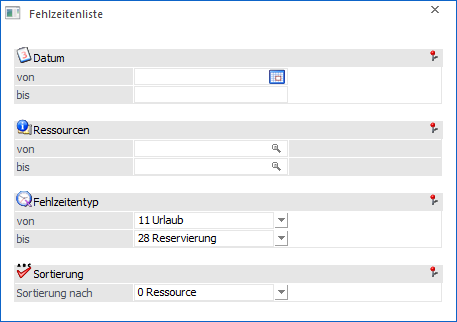
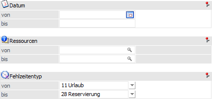
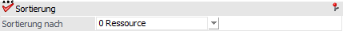
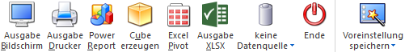
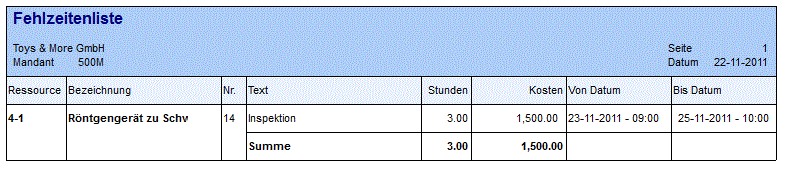

Im Menüpunkt
1 WinLine PPS
1 Auswertungen
1 Fehlzeitenliste
erhält man eine Liste der erfassten Fehlzeiten.

Die Ausgabe der Fehlzeitenliste kann nach den folgenden Kriterien eingeschränkt bzw. definiert werden:
Selektionen

Ø Datum von / bis
An dieser Stelle kann der auszuwertende Datumsbereich hinterlegen werden.
Ø Ressourcen von / bis
Hier kann eine Einschränkung auf die Ressourcen erfolgen.
Ø Fehlzeitentyp von / bis
Mit Hilfe der Auswahlboxen kann eine Einschränkung auf den Typ der auszuwertenden Fehlzeiten vorgenommen werden.
Sortierung

Ø Sortierung nach
Die Auswertung kann nach den folgenden Kriterien sortiert werden:
ü 0 - Ressourcen
ü 1 - Datum
ü 2 - Typ
Buttons

Ø Ausgabe Bildschirm
Mit Hilfe des Buttons "Ausgabe Bildschirm" oder der Taste F5 wird die Auswertung am Bildschirm ausgegeben.
Ø Ausgabe Drucker
Durch Anwahl des Buttons "Ausgabe Drucker" wird die Auswertung am Drucker ausgegeben.
Ø Power Report
Durch Drücken des Buttons "Power Report" wird die Auswertung auf Basis von Cube-Daten grafisch dargestellt. Die Ausgabe ist individuell anpassbar und erfolgt in der Form von "Widgets", die unterschiedlichsten Darstellungen ermöglichen.
Ø Cube erzeugen
Wenn die Option "Cube erzeugen" gewählt wird (nur möglich, wenn auch die entsprechende Lizenz dafür vorhanden ist), dann wird die Fehlzeitenliste im "Olap Viewer" angezeigt. In diesem können die Daten nach verschiedenen Gesichtspunkten ausgewertet werden. In der Auswertung werden folgende Daten (Fakten) angezeigt:
ü Ressource
ü Bezeichnung
ü Typ
ü Text
ü Datum von
ü Datum bis
ü Stundensatz
ü SOLLZeit
Dazu gibt es noch die Measures, nach denen die Auswertung "betrachtet" werden kann. Die Measures sind:
ü Fehlzeitstunden
ü Kosten
Ø Excel Pivot
Durch Anwahl des Buttons "Excel Pivot" werden die selektierten Zeilen in Form einer Pivot Ausgabe in Microsoft Excel (2007 oder höher) angezeigt.
Ø Ausgabe XLSX
Mit Hilfe des Buttons "Ausgabe XLSX" wird die Auswertung mit den von Ihnen definierten Selektionen an Microsoft Excel übergeben.
Ø Datenquelle
Mit Hilfe dieser Auswahl kann definiert werden, ob und wie eine Datenquelle (d.h. ein Snapshot von Daten) genutzt werden soll. Der Auswahlbutton steht nur zur Verfügung, wenn WinLine BI BUSINESS oder WinLine BI CORPORATE lizensiert wurde.
ü Keine Datenquelle
Die
Daten werden zur Laufzeit ermittelt, d.h. die für die Ausgabe erforderlichen
Daten werden direkt aus der produktiven WinLine-Datenbank geholt und in der
gewünschten Variante ausgegeben.
ü Datenquelle
erstellen/aktualisieren
Die Daten werden zur Laufzeit ermittelt und an eine
zu definierende Datenquelle übergeben. Nach dem Befüllen der Datenquelle wird
die gewünschte Ausgabevariante über die Datenquelle generiert. Dieser Vorgang
könnte mit einer Zeitverzögerung verbunden sein, da die Daten zusätzlich
abgespeichert werden müssen.
ü Datenquelle verwenden
Die
Daten werden direkt aus einer auszuwählenden Datenquelle gelesen, d.h. die für
die Ausgabe erforderlichen Daten können ohne Verzögerung in der gewünschten
Varianten ausgegeben werden. Hierbei werden nur die Ausgabevarianten
"PowerReport" und "Cube erzeugen" unterstützt.
Hinweis
Der Button "Datenquelle verwenden" steht nur zur Verfügung, wenn es zumindest eine private oder öffentliche Datenquelle für diesen Bereich (bezogen auf den aktuellen Benutzer / Mandanten) gibt.
Ø Ende
Durch Drücken des Buttons "Ende" bzw. der Taste ESC wird das Fenster geschlossen.
Ø Voreinstellung speichern
Durch Anwahl dieses Buttons erfolgt eine benutzerspezifische Speicherung aller im Fenster getätigten Einstellungen. Diese sogenannten "Voreinstellungen" können jederzeit wieder abgerufen werden und ermöglichen dadurch ein schnelleres und zielorientierteres Arbeiten (nähere Informationen entnehmen Sie bitte dem Kapitel "Die Voreinstellungen").
Beispiel

In der Auswertung fehlt Ressource 4-1 von 9 bis 10 Uhr an 3 Tagen, 23. 11. 2011 bis 25. 11. 2011, daher die Fehlzeit von 3 Stunden. Die Ressource hat einen Stundensatz von 500 EUR hinterlegt, daher die Fehlzeitkosten von 1.500 EUR. Zusätzlich kann Variabel '0,27' im Formular hinterlegt werden, um die gesamte "Arbeitszeitsumme ohne Fehlzeiten (in Stunden)" andrucken zu können. In diesem Beispiel wären das 24 Stunden, da die Ressource laut Kalenderschema wochentags von 8 bis 16 Uhr verfügbar ist.